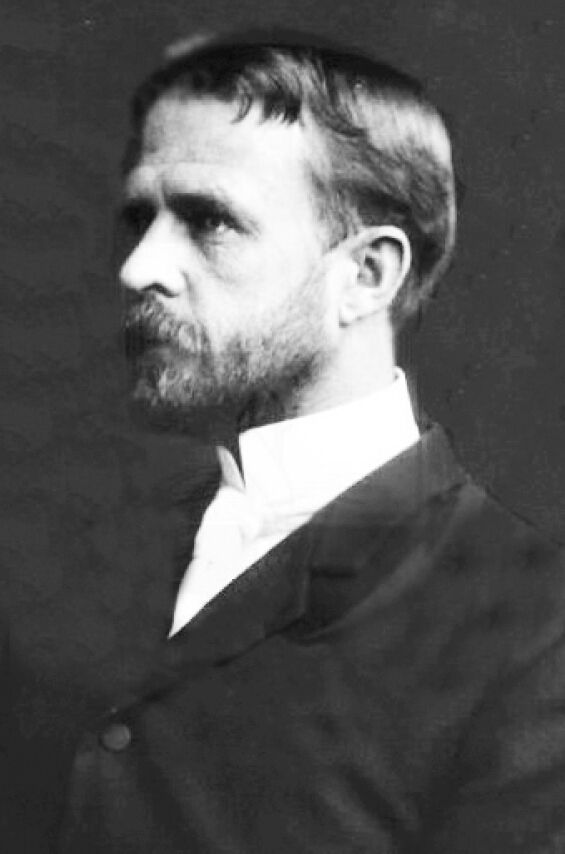

十二、对摩尔根学派的批判：一场政治干涉学术的闹剧
摩尔根及其助手的出色工作，使得遗传学界多数人接受了基因论，摩尔根学派成为经典遗传学的主流学派。但是，也有一些人怀疑或不同意基因论，影响较大的主要是当时苏联和社会主义国家中的米丘林学派，或称米丘林李森科学派。
米丘林学派的基本观点是：遗传性是生物与其生存条件的矛盾统一，一方面表现为生物对外界环境条件有一定的要求，满足它的要求它才能正常地生长发育；另一方面表现为生物对外界环境条件能作出一定的反应，也就是说，如果它所要求的条件不能得到，它会发生相应的反应。各种生物的遗传性的这两个方面，都是它在长期的发展历史中逐渐形成的。这样认识的遗传性，是与整个生物体都有关系的，是生物体表现出来的属性。因此米丘林学派否认生物体内有特殊的、专门决定遗传的物质存在，即否定基因的存在。
从理论渊源上说，米丘林学派承认拉马克的后天获得性遗传理论，而摩尔根学派从基因论出发，认为只有基因发生了变化才能够遗传。米丘林学派还认为，遗传学的根本任务是为生产实践服务，当掌握了生物的遗传特性以后，一方面要尽力满足它对生活条件的要求以提高产量，另一方面可以有意识地改变它的生活条件，定向地改变它的遗传性，使它产生符合人的要求的新特性和新特征，培育出新的动植物品种。他们反对摩尔根式的研究，认为那样的研究只是关注生物子代与亲代相似与否，关注各种特性在后代中如何分布，却脱离了生产实践。米丘林学派在实践上的主要成就是培育出来一些农作物新品种，在理论上主要是提出了驯化理论、植物阶段发育理论等。
学术上有不同观点是正常现象，不同学派之间的争论对科学发展是有利的，但是这场争论却被政治化了。20世纪30至50年代，以李森科为代表的米丘林学派，把摩尔根学派说成是唯心主义的，理由是基因是假设出来的东西。他们还认为摩尔根学派以果蝇为研究对象，不是结合生产需要进行研究，不是为发展生产服务；不是为劳动人民服务，而是为帝国主义服务；不是无产阶级的科学，而是资产阶级的科学。李森科依靠斯大林政治上的支持成为学阀学霸，使苏联当时的摩尔根学派科学家受到了残酷的打击和迫害，甚至被当做犯人关押起来。苏联的做法也影响到中国，摩尔根学派在中国也曾受到批判和压制，所幸的是不像苏联打击迫害得那样厉害，也比苏联纠正得早。
苏联领导人这样做，有其深刻的思想和政治原因。在当时，他们看一切问题，包括科学问题，都是从阶级斗争的观点出发，从社会主义和资本主义的斗争出发，从美苏两国的斗争出发。米丘林学派与摩尔根学派之间的争论，被他们说成是无产阶级与资产阶级、社会主义与资本主义之间的斗争，是美国科学与苏联科学之间的斗争。他们要用社会主义的、无产阶级的、苏维埃的科学压倒帝国主义的、资产阶级的、美国的科学，以证明社会主义的优越性。苏联当时急于发展农业生产，增强国力，把希望寄托在米丘林学派身上，因为该学派直接致力于培育农作物新品种，而摩尔根学派以果蝇为主要研究材料，与农业似乎关系遥远。可是，历史发展却与他们的愿望相反。摩尔根学派通过研究果蝇发现了遗传规律，指导杂交育种取得了重要成果，基础科学的进步转化成了巨大的生产力，而被他们寄予很大希望的李森科却没有什么建树，成了学术界耻笑的对象。看起来似乎没有实际意义的研究在实践中却发挥了重要作用，与实际需要似乎关系很直接的研究却难以有所成就，这样的教训是发人深省的。虽然摩尔根学派与米丘林学派的争论已经成为历史，以政治干涉学术问题的做法如今已经很少见，但是，对于发生这一事件的深刻原因，还值得我们进一步思考。

摩尔根